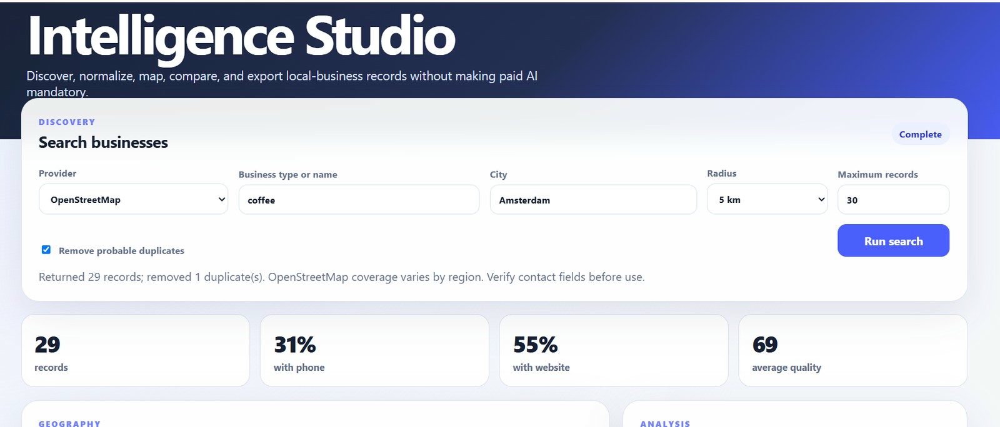

Official visual companion
Inside GeoBusiness Intelligence Studio
A Visual Guide to Open Data, Geospatial Discovery, and Local Business Intelligence

Faramarz Kowsari · Version 1.0.0 · 2026
01Purpose
Why build a local-business intelligence laboratory?
Business-location data often arrives fragmented: names vary, addresses are incomplete, contact fields disappear, and the same place may be represented more than once. GeoBusiness Intelligence Studio converts that ambiguity into an inspectable pipeline.
Accessible core
Sample data and OpenStreetMap make the main workflow useful without buying an AI key.
Visible provenance
Every record carries its source so users can distinguish fictional, open, and commercial data.
Responsible boundaries
No Google Maps website scraping, CAPTCHA bypass, identity rotation, or access-control evasion.
Portfolio depth
FastAPI, adapters, validation, geospatial display, export, testing, CI, Docker, and optional AI.
Providers
One interface, three data paths
Sample provider
Fictional local records support offline demonstration, predictable testing, and onboarding without network dependencies.
OpenStreetMap
Nominatim resolves the city; Overpass retrieves matching map objects. No API key is required, but public-service policies and rate limits matter.
Google Places
An optional adapter uses the official Places API Text Search endpoint and the visitor's own restricted key.
Future adapters
The shared provider contract permits additional open directories, municipal datasets, or internally authorized sources.
Workflow
From a query to an exportable dataset
The deterministic path remains complete without AI. Model-generated interpretation is an optional sixth layer, never the evidence itself.
04Interface
A dashboard that keeps evidence visible

- Search controls expose provider, query, geography, radius, maximum records, and duplicate removal.
- Metric cards reveal record count, phone coverage, website coverage, and average quality.
- The map preserves spatial context instead of reducing the dataset to a spreadsheet.
- The results table keeps provenance, contact fields, rating, and quality visible per record.
- CSV and JSON exports support downstream analysis, reporting, and reproducible demonstrations.
Architecture
FastAPI at the center of replaceable components
Browser dashboard
Static HTML, CSS, and JavaScript served by FastAPI; Leaflet renders optional map layers.
API layer
Pydantic validates requests and responses while OpenAPI exposes interactive endpoint documentation.
Search service
Provider selection, normalization, quality scoring, sorting, and probable duplicate removal.
Analysis layer
Built-in statistical briefing, plus optional Ollama or OpenAI-compatible chat completion.
Provider adapter
↓
FastAPI route
↓
Search orchestration
↓
Normalization → quality → dedupe
↓
Map / table / analysis / CSV / JSON06Data quality
Completeness is measured; identity is inferred cautiously
The project does not pretend that a single score proves correctness. The quality value reflects the presence of useful fields, while duplicate detection combines stronger evidence such as matching phone numbers with softer evidence such as similar names and addresses.
Normalization
Provider-specific payloads become a consistent business model with explicit source labels.
Completeness score
Phone, website, address, category, coordinates, and other fields contribute to an interpretable score.
Probable duplicates
Duplicates are removed conservatively; users can disable the feature and inspect raw provider output.
Verification warning
Contact fields and business status can change. Exported records must be checked before operational use.
Privacy · AI · Deployment
Useful without AI; extensible when AI is justified
- No commercial model key is required for discovery, normalization, mapping, deduplication, quality scoring, export, or deterministic analysis.
- Ollama can provide local model inference without a paid API.
- An OpenAI-compatible endpoint can be enabled with the user's own secret in a local
.envfile. - Secrets are ignored by Git and are never embedded in the public repository.
- Docker supports reproducible local deployment; GitHub Actions runs lint and tests across supported Python versions.
- A production multi-user service should add PostGIS, caching, authentication, quotas, encrypted secret storage, audit logs, and dedicated geocoding infrastructure.
Use cases and research value
What this repository can demonstrate
Market orientation
Compare business density, category coverage, and contact completeness across cities or neighborhoods.
Data-engineering education
Teach adapter patterns, provenance, normalization, quality metrics, geospatial interfaces, and API design.
Responsible AI practice
Separate deterministic evidence from optional model interpretation and make credential ownership explicit.
Portfolio review
Show Python engineering, FastAPI, testing, CI, Docker, public documentation, scholarly metadata, and deployment planning.
CITATION.cff, .zenodo.json, and codemeta.json. A version-specific DOI will be added after the first Zenodo-archived GitHub release.Author

Faramarz Kowsari
Faramarz Kowsari is an author, Software Engineer and AI researcher based in Istanbul. Focusing on the intersection of technology, education, and personal growth, he has published over 80 digital titles on international platforms. His areas of expertise span Artificial Intelligence, prompt engineering, modern trading strategies (Smart Money Concepts & algorithmic trading), as well as classical literature and mindfulness. In addition to writing, he develops web-based educational tools and creates specialized instructional video content.
Official profiles
- ORCID: https://orcid.org/0000-0003-1692-0453
- Google Scholar: https://scholar.google.com/citations?user=G7tP5WMAAAAJ&hl=en
- GitHub: https://github.com/FaramarzKowsari
- LinkedIn: https://www.linkedin.com/in/faramarzkowsari
- Google Books: https://play.google.com/store/search?q=Faramarz_Kowsari&c=books
- Project: https://github.com/FaramarzKowsari/geo-business-intelligence-studio
The map becomes intelligence only after the uncertainty remains visible.
10